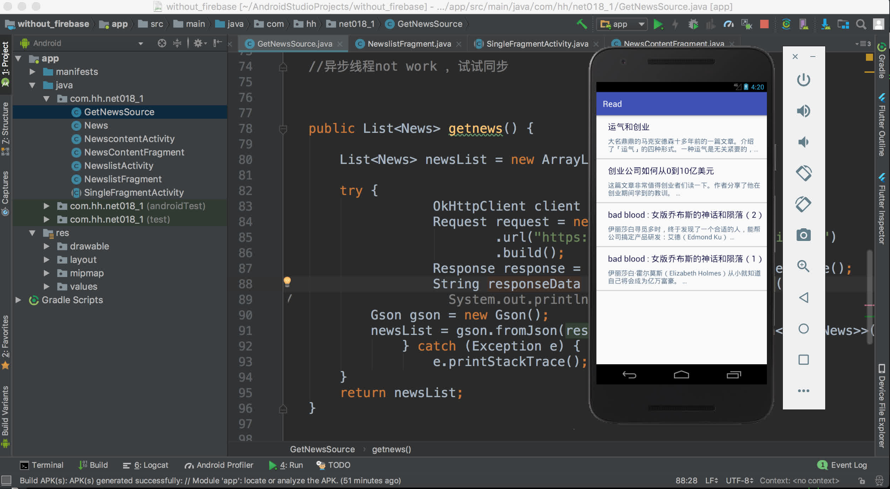

个人项目
背景
学习编程
去年，我在推特上看到了这样一条推文。
First years of programming were really hard. I was confused for a long time. But I remembered how I got through it. It’s the feeling of getting excited — like an itch or buzz in your head. Seeing things coming together before they’re real. I remembered because I feel it again.
这个推文是 Facebook 的 react 开发团队核心成员 Dan Abramov 发的。他回顾了自己刚开始学习编程的时候的痛苦和困惑，也指出了编程的乐趣。
这条推文让我感到很惊讶，我从未想像过，一个全球流行的前端框架的核心成员，居然在学习编程的时候有和普通人一样的挫败感。这颠覆了我对程序员这个职业的刻板印象：编程对他们来说轻而易举。
所以，在反思之后，我也踏上了学习编程的旅途。
制作产品
去年年末，我又看到了一条推文。
"I really want to break into Product Management"
make products.
"If only someone would tell me how I can get a startup to notice me."
Make Products.
"I guess it's impossible and I'll never break into the industry."
MAKE PRODUCTS.
这条推文一下子就击中我，让我回想到大四时候，想着要如何成为产品经理的自己。
所以，如何成为一个产品经理？如何成为一个优秀的产品经理，众说纷纭，经过这几年的职业生涯，我的脑海中隐隐浮现了一个模糊的答案，直到看到这条推文，这个答案恍然间清晰，那就是：
MAKE PRODUCTS.
仿湾区日报App
湾区日报是一个阅读类 APP，每天向读者推荐5篇优质英文文章，并附上作者的简评。
这个APP的作者是一位硅谷华人工程师，他在 湾区日报是如何运作的 这篇文章中记录了自己打造湾区日报的技术和运维方面的细节。
我平时也有阅读英文类资讯的习惯，很多知识，都是我从英文内容源获得的，推特，各类博客，书籍等等。在看完这个文章后，我就开始制作一个类似产品。
后端我是用 python 框架 django 以及 django rest framework 来写接口。我在B站上看了下django的教学视频，就开始动手了。根据我自己的需求，后端单纯提供接口非常简单，django rest framework 提供了非常强大且方便的工具，几乎只需要复制粘贴官网或视频教程上的代码，稍微改改就能用。
其实刚开始，我是准备用第三方系统，也就是 backend as a service 来解决后端问题的，避免自己还要花时间学习后端编程。经过一番谷歌后，我发现了 parse server，以及一个 parse server 服务的提供商，叫 Back4App。
Back4App 提供很多强大的功能包括推送，分析等等，但最核心的功能当然就像他的名字一样，为前端工程师提供后端服务。而它的操作也非常简单，只需要你创建你想要的实体类，以及该类的字段，然后添加一行行数据即可。这些操作，除了可以调用他提供的 api 来完成外，更方便的是他还能通过图形界面来完成，只需点几下鼠标就可以了！
经过一番测试后，我简直是爱上了 Back4App （很大程度上是因为它提供慷慨的免费额度）。
但最后还是决定自己搭后端，原因也很简单：django rest framework 也很简单，而且数据始终在自己的服务器上，更加放心。
前端则是 Android APP，用的是Java。写 Android 的过程，基本上可以说是 learn by doing ，作为一个产品经理，当然还是要坚持方法论，先做出一个 mvp 版本，尽快推向大众，然后根据反馈和数据来制定下一步的策略。虽然这是我的个人APP，但开发它也是有时间成本的！
所以，第一个版本的APP，可以说是非常朴素。整个APP包括只包括两个 activity（fragment）。首页为 recyclerview，展示一个从后端拉数据的列表，每个列表 item 点击后会跳转到详情页。
请求数据，用的 okhttp ，数据解析用的 gson。用第三方库真是太爽了，省了好多本该自己写的代码。
public List<News> getnews() {
List<News> newsList = new ArrayList<>();
try {
OkHttpClient client = new OkHttpClient();
Request request = new Request.Builder()
.url("https://xxx.com/")
.build();
Response response = client.newCall(request).execute();
String responseData = response.body().string();
// System.out.println(responseData);
Gson gson = new Gson();
newsList = gson.fromJson(responseData, new TypeToken<List<News>>() {}.getType());
} catch (Exception e) {
e.printStackTrace();
}
return newsList;
}
有若干功能，是靠谷歌搜索来搞定的，例如，首页的列表下拉刷新，我不会写，搜了下，复制粘贴，改改，搞定！
有一些本来要加的功能，在权衡后，被我拿掉了，例如点赞。我在 GitHub 上找了一个库，用上之后感觉不错，但是点赞不仅仅设计到页面，还有数据传输和缓存，这会增加复杂度，对我来说是得不偿失的，与我尽快 release 的目标冲突，所以会放在以后的迭代过程中来做。
当然，在写 Android 的时候，还是有各种bug，但好在有谷歌，很多时候把报错信息复制上去直接搜索就能立刻找到答案。
最后终于完成了。

但是在发布前，还有很重要的一步没有做，那就是集成分析代码。
作为一个产品经理，怎么能不关注数据？？？在网站上，我经常使用谷歌三件套：google ananlytics，google tag manager，google optimize，这三个强大的工具，怎么夸它们都不为过。通过它们可以查看用户行为数据，添加第三方代码，甚至是做 A/B 测试等等，为平时的网站运营和迭代提供数据参考。但是很遗憾，由于众所周知的原因，国内无法正常获取它们，必须科学上网才行。在移动端，虽然 Google analytics 也可以被集成，但谷歌更推崇广大开发者使用 firebase 。所以我本次就集成了 firebase 的统计代码。但我觉得 firebase 的一个缺点是它的数据更新太慢了，无法做到像谷歌分析那样几乎实时同步。
用 firebase 还有一个好处，就是可以利用它的自动化测试 test lab 服务。当你上传 apk文件后， test lab 自动帮你在真机和虚拟机上进行测试，对于我这样的业余开发人员来说，做不到在大量真机上进行测试，而 firebase 的这项服务无疑是雪中送炭。下图为 firebase 的自动测试抓取图表。
部署方面，我用的是django+nginx+usigi。网上一大堆的相关文章都是 http，而我想用 https 来部署。就自己动手试了下，用的 Let's Encrypt 的免费证书，最后搞定了。
到这里为止，已经圆满完成目标。本来打算上架应用商店的，但是看了下国内的应用商店都要求手持身份证自拍，这个我比较讨厌，因为上次阿里云备案网站，我拍过一次，但我高度怀疑阿里云把我的信息给泄露了。所以坚决不上国内的应用商店。而国外的 google paly，由于还要用相关信用卡/借记卡缴纳25美刀的费用，而我又没有，所以也暂时上不去。
附上apk下载地址。
日语学习APP
刚开始学习日语，发现了一个非常好的网站 nhk news web easy，
这个网站每天会更新若干个短新闻，每个新闻都有音频和文本，音频是 nhk 的主播慢速朗读，文本则有假名标注汉字，非常适合初学者每天精听。
在完成仿湾区日报的 mvp 版本后，我决定巩固一下学到的 Android 开发的知识，因此打算做一个日语学习的APP，第一个版本的目标是将这个日语学习网站给APP化。
这个网站的数据非常好拿，通过浏览器简单调试就能发现，每次访问首页时，会请求 https://www3.nhk.or.jp/news/easy/top-list.json这个数据，它代表每天所有的新闻，从中可以拿到单个新闻的数据，最核心的就是 news_id，通过这个 news_id 构建拿到每个新闻的音频 url 以及新闻文本。
所以这个APP不需要后端，前端 Android 直接从源网站上拉数据展示。请求完json数据源后，抽取构建单个新闻网页URL，然后用 jsoup 将新闻网页中的文本内容抽出出来。之前在做 python 爬虫用过 beautifulsoup，jsoup的功能跟它大同小异。
前端方面，第一个版本还是跟仿湾区日报APP一样，两个activity（fragment），一个列表页，一个详情页，基本上复制粘贴即可。
但做这个APP有一个最大的难题，即日语假名标注。
HTML5 支持 <ruby> 标签，所以在网页上来实现毫无问题。
由于本博客是用 vuepress 做的，所有内容都是Markdown .md文件，而.md文件中又可以直接插入HTML标签，所以可以直接这么写：
<ruby>寝<rt>ね</rt></ruby>る<ruby>時間<rt>じかん</rt></ruby>が<ruby>足<rt>た</rt></ruby>りない<ruby>人<rt>ひと</rt></ruby> <ruby>休<rt>やす</rt></ruby>みの<ruby>日<rt>ひ</rt></ruby>だけ<ruby>長<rt>なが</rt></ruby>く<ruby>寝<rt>ね</rt></ruby>ても<ruby>十分<rt>じゅうぶん</rt></ruby>ではない
效果就是这样，两行文本，上边一行则是假名标注：
寝る時間が足りない人 休みの日だけ長く寝ても十分ではない
但由于 Android textview 不是HTML网页，要做到像在网站上一样上下两行还是有难度的。
经过搜索后，我了解到，textview 能原生显示 HTML 标签，但是我在尝试和发现它不支持作为 HTML5的 标签。
又经过一番谷歌后，我找到了 一个GitHub库，html-textview，这个第三方库的功能就是它描述的那样，TextView to display simple HTML content ，用textview 来展示 HTML内容，但我阅读完说明后，发现不在它支持的标签中，我依然怀着侥幸的心理，把这个库加到自己的项目中，尝试后发现，果然没办法展示。
我继续谷歌，找到了Stack Overflow上的一个提问 How can I display element in TextView?，跟我的需求一模一样。满怀着信心点进去，却发现唯一的一个答案中并没有给出解决方案，而提问者本身最终选择了 webview 。
在那唯一一个答案下边，我看到了提问者的评论：
I see NHK Easy Japanese News looks like using ruby. What tools can I use to find which widget it's using? – Zen May 23 '16 at 12:33
原来提问者和我要做的需求居然都源自于 nhk easy web news 这个网站！！！我们都是来自五湖四海，为了一个共同的需求而走到了一起！我仿佛听见他对我说：
来了？老弟
但短暂的兴奋后，我变得异常空虚。他选择了 webview，而我注定也要像他一样屈服吗？我们的命运就到此为止了吗？
我关掉了这个让我在1分钟内经历了从兴奋到空虚生命历程的网页，然后继续谷歌。
试过几个关键词后，我又在GitHub上找到了一个库 rubyspan，当我点进去时，一张截图出现在我眼前，而我几乎哇的一声哭出来。没错，这就是我想要的，经过无数次地搜索，我终于抵达了 promised land。
这个仓库的核心文件就是两个Java类，虽然我看不懂，但是我会复制粘贴啊。于是就引入了自己的项目，然后运行模拟器，两秒钟后，数据成功显示！
感谢这个仓库的作者！经过无数次的谷歌后，我找到了他，完美解决了问题。虽然作者指出了几个已知的bug，不过基本上跟我的项目需求无关。
剩下的技术问题就所剩无几了。有一个值得强调的是，Android 播放 hls 音频流。因为nhk的音频播放是 hls 音频流，我没接触过这个，所以有点不确定 Android 能不能支持，经过一番谷歌后，了解到 Android 对 hls 是原生支持的，但要求api版本不能太低。
所以技术上来说的话，基本没有什么能够阻挡这个APP的诞生了。
这个时候，我开始构思下一个产品。
英语精读网
之前加了几个学习英语的微信群，里边精读外刊的人有很多。对于学习英语，我现在经常会用 Python 爬取纽约时报中文网上文章，转成 PDF，放 kindle 里边。。为什么是纽约时报中文网？因为它有优质的中英对照翻译，非常方便个人精读学习 。
但是如今，我不再满足于满足自己的需求，既然用精读外文报刊的模式来学习英语的人有很多，微博以及微信上甚至有人做收费群，那么我作为一个产品经理，为什么不能自己整一个产品出来满足用户的需求？
待续……